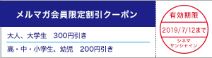
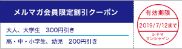

|
シネマサンシャインメールマガジン 2019/6/28号 |
 |
毎月1日は映画サービスデー
どなたさまでも1,200円でご鑑賞いただけます。 次回は来週7/1（月）です！ ※3D、4DX、IMAX、ATMOS、dts-x、ScreenXは別途追加料金が必要となります。 |
オススメ作品
『スパイダーマン：ファー・フロム・ホーム』
6/28（金）公開

© & ™ 2019 MARVEL. ©2019 CPII. All Rights Reserved.
トム・ホランドが新たにスパイダーマン／ピーター・パーカーを演じ、「アベンジャーズ」を中心とした「マーベル・シネマティック・ユニバース」の世界に参戦した「スパイダーマン ホームカミング」の続編。 スパイダーマンこと高校生のピーター・パーカーは、真のヒーローへと成長すべく、師匠とも言うべきアイアンマ ンに導かれてきた。 そして今、『アベンジャーズ／エンドゲーム』の戦いを経て、ピーターは次なる戦いに挑むこと になる――。
監督：ジョン・ワッツ
出演：トム・ホランド、サミュエル・L・ジャクソン、ゼンデイヤ
出演：トム・ホランド、サミュエル・L・ジャクソン、ゼンデイヤ
『Ｄｉｎｅｒ ダイナー』
7/5（金）公開

©2019 「Ｄｉｎｅｒ ダイナー」製作委員会
命がゴミのように扱われる、殺し屋専用の食堂ダイナー＜食堂＞。 店主は、元殺し屋で天才シェフのボンベロ。 日給30万の怪しいアルバイトに手を出してその店に売られたオオバカナコ。 次々と店にやってくる最狂の殺し屋たち。 オーダーは極上の料理か、殺し合いか…店主、ウェイ トレス、殺し屋たち。 新たな殺し合いが今、始まる――！
監督：蜷川実花
出演：藤原竜也、玉城ティナ、窪田正孝、本郷奏多、武田真治、斎藤 工
出演：藤原竜也、玉城ティナ、窪田正孝、本郷奏多、武田真治、斎藤 工
上映作品
6/28（金）公開
『それいけ！アンパンマン きらめけ！アイスの国のバニラ姫』

ニュース
○この夏、IMAXで没入するか？4DXで体感するか。 豪華賞品が当たる！シネマサンシャイン サマーキャンペーン実施中
6/28～9/5の期間中、この夏話題の対象作品4作品(IMAXまたは4DX)のQRコード画面のスクリーンショット画像もしくはチケット半券を撮影した画像計2枚を1口としてご応募ください。
実施劇場：平和島、土浦、沼津、大和郡山、衣山、北島、MASAKI、姶良
詳細はキャンペーンサイトをご確認ください。

実施劇場：平和島、土浦、沼津、大和郡山、衣山、北島、MASAKI、姶良
詳細はキャンペーンサイトをご確認ください。
詳細はコチラ！
http://cinemasunshine-2019cp.jp/
http://cinemasunshine-2019cp.jp/
○グランドシネマサンシャイン、7/19（金）池袋にオープン！
全12スクリーン、2,443席の大型シネコン「グランドシネマサンシャイン」が池袋東口にオープンします。 日本最大スクリーンの「IMAXレーザー／GTテクノロジー」や、日本初上陸の「4DXwithScreenX」、レーザープロジェクターと立体音響の「BESTIA」など、従来のシネマコンプレックスの基準を超える設備とサービスで、未来基準のエンターテイメントを提供します。
また、12階、5階にはそれぞれオリジナルブランドのレストランとカフェも出店。 アメリカンワッフルの専門店「クラッパーズダイナー」、イタリアンバルの「バール パノーラマ」など、映画と一緒にお食事もお楽しみいただけます。

また、12階、5階にはそれぞれオリジナルブランドのレストランとカフェも出店。 アメリカンワッフルの専門店「クラッパーズダイナー」、イタリアンバルの「バール パノーラマ」など、映画と一緒にお食事もお楽しみいただけます。
○シネマサンシャイン池袋閉館のご案内
1985年より約34年間に亘り営業してまいりましたシネマサンシャイン池袋でございますが、2019年7月12日（金）をもちまして閉館する事になりました。
長年ご愛顧いただきました皆様に、心より御礼申し上げます。
閉館後につきましては、7月19日（金）より開業いたしますグランドシネマサンシャインをご利用いただけますと幸いです。
長年ご愛顧いただきました皆様に、心より御礼申し上げます。
閉館後につきましては、7月19日（金）より開業いたしますグランドシネマサンシャインをご利用いただけますと幸いです。
○シネマサンシャイン「おやこシネマ」開催決定
子育て中のママ、パパがお子さま連れで一緒に映画を鑑賞できる上映会を開催いたします。
小さいお子さま連れでの映画鑑賞は…
「びっくりして泣いてしまったら…」
「暗いので子供が怖がるかも…」
「子供がおしゃべりしたり歩き回るかも…」
そんな不安や心配がつきないママ、パパの為の上映会です。
音量が通常よりも小さめで、照明も明るめに設定されており、
小さなお子様でも怖がることなくご鑑賞いただけます。
今後の実施は下記となります。
7月4日(木)『今日も嫌がらせ弁当』
7月18日(木)『トイ・ストーリー4』
詳細は各劇場までお問合せください。
小さいお子さま連れでの映画鑑賞は…
「びっくりして泣いてしまったら…」
「暗いので子供が怖がるかも…」
「子供がおしゃべりしたり歩き回るかも…」
そんな不安や心配がつきないママ、パパの為の上映会です。
音量が通常よりも小さめで、照明も明るめに設定されており、
小さなお子様でも怖がることなくご鑑賞いただけます。
今後の実施は下記となります。
7月4日(木)『今日も嫌がらせ弁当』
7月18日(木)『トイ・ストーリー4』
詳細は各劇場までお問合せください。
○4DX追加料金が高校生以下半額の500円に！【期間限定】
シネマサンシャインの4DXシアターでは、現在キャンペーン期間中につき高校生以下（高校生・中学生・小学生・幼児）の4DX追加料金（通常 1,000円）が半額の500円になります！
通常鑑賞料金（1,000円）＋4DX追加料金（500円）＝1,500円
※3D作品の場合は上記にさらに400円が加算されます。
※一部特別興行は適用とならない場合があります。
※無料鑑賞（メンバーズ会員無料鑑賞、招待券等）は適用外。
▼シネマサンシャイン4DXシアター導入劇場はこちら
平和島、沼津、大和郡山、北島、エミフルMASAKI、姶良

通常鑑賞料金（1,000円）＋4DX追加料金（500円）＝1,500円
※3D作品の場合は上記にさらに400円が加算されます。
※一部特別興行は適用とならない場合があります。
※無料鑑賞（メンバーズ会員無料鑑賞、招待券等）は適用外。
▼シネマサンシャイン4DXシアター導入劇場はこちら
平和島、沼津、大和郡山、北島、エミフルMASAKI、姶良
○シネマサンシャインの新しい会員サービス『シネマサンシャイン リワード』スタート！
もっともっとオトクに映画を観よう！６ポイントで１回鑑賞無料！毎週木曜は1,100円鑑賞などお得なサービスがいっぱいです！シネマサンシャインアプリから新しい会員サービスへ登録いただけます。 是非ご登録ください。
全劇場で対応開始！
※年会費500円あり
全劇場で対応開始！
※年会費500円あり

○マンガで知る＜IMAX＞、マンガで知る＜4DX＞

○メルマガ会員限定割引クーポンプレゼント！
メルマガ会員様限定でお得な割引クーポンをプレゼント！
以下の画面をチケット購入時にご提示ください。
PCでご覧のお客様は該当部分を印刷してご提示ください。

以下の画面をチケット購入時にご提示ください。
PCでご覧のお客様は該当部分を印刷してご提示ください。

※有効期限は7月12日までになります。
※割引券1枚で2名様まで有効。 他の割引サービスとの併用はできません。
※特別興行などご利用いただけない場合がございます。
※インターネット購入（e-box、ムビチケ)ではご利用いただけません。
※期間中何回でもご利用頂けます。
池袋、ユーカリが丘、大和郡山、北島、下関、姶良の自動券売機では下記QRをご利用ください。
【一般・大学生】
【高校生以下】

【一般・大学生】
【高校生以下】
ムービークイズ
○前回のクイズ
6/21公開『X-MEN：ダーク・フェニックス』で共演しているジェームズ・マカボイとジェシカ・チャスティンは、2013年公開の『ラブストーリーズ コナーの涙』『ラブストーリーズ エリナーの愛情』でも共演していますが、今秋公開のホラー作品でも共演作があります。 その作品はなんでしょう。
6/21公開『X-MEN：ダーク・フェニックス』で共演しているジェームズ・マカボイとジェシカ・チャスティンは、2013年公開の『ラブストーリーズ コナーの涙』『ラブストーリーズ エリナーの愛情』でも共演していますが、今秋公開のホラー作品でも共演作があります。 その作品はなんでしょう。
答え：『IT/イット THE END“それ”が見えたら、終わり。 』
大ヒットホラー『IT/イット “それ”が見えたら、終わり。 』続編。 前作から27年後を舞台に、ジェームズ・マカヴォイとジェシカ・チャステインは、大人になったビルとベバリーを演じる。 今秋、11/1公開です！
大ヒットホラー『IT/イット “それ”が見えたら、終わり。 』続編。 前作から27年後を舞台に、ジェームズ・マカヴォイとジェシカ・チャステインは、大人になったビルとベバリーを演じる。 今秋、11/1公開です！
○今回のクイズ
6/28公開『スパイダーマン：ファー・フロム・ホーム』でスパイダーマン／ピーター・パーカーを演じるトム・ホランドは、とある映画のミュージカル化された舞台版で子役デビューをしたそうです。 その作品はなんでしょう。
6/28公開『スパイダーマン：ファー・フロム・ホーム』でスパイダーマン／ピーター・パーカーを演じるトム・ホランドは、とある映画のミュージカル化された舞台版で子役デビューをしたそうです。 その作品はなんでしょう。
答えは、次回のシネマサンシャインメールマガジンで！